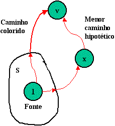

| Para
determinar qual o vértice adicionamos a cada passo, aplicamos o
critério de escolher o vértice v com
a menor distância gravada na tabela D,
tal que v já não esteja em S.
Devemos provar que, para este vértice v, a distância gravada em D é realmente o comprimento do menor caminho do vértice 1 ao vértice v. Supomos que havia um caminho mais curto do vértice 1 ao v, tal como mostra ao lado. Este caminho deixa primeiro S para ir para qualquer vértice x, e então vai a v. Mas se este caminho é menor que o caminho colorido a v, portanto seu seguimento inicial do vértice 1 a x é também menor, então o critério teria escolhido o vértice x no lugar de v como sendo o próximo vértice a adicionar ao conjunto S, desde que teríamos tido D[x] < D[v]. Quando adicionamos v a S imaginamos v agora colorido e também colorimos o menor caminho do vértice 1 ao v (toda a resta exceto a última que já foi colorida). A seguir, devemos atualizar as entradas de D verificando cada vértice w não pertencente a S, se um caminho através de v e então diretamente a w é menor do que a distância gravada anteriormente a w. Isto é, trocamos D[w] por D[v] mais o valor da aresta de v a w se for menor. |